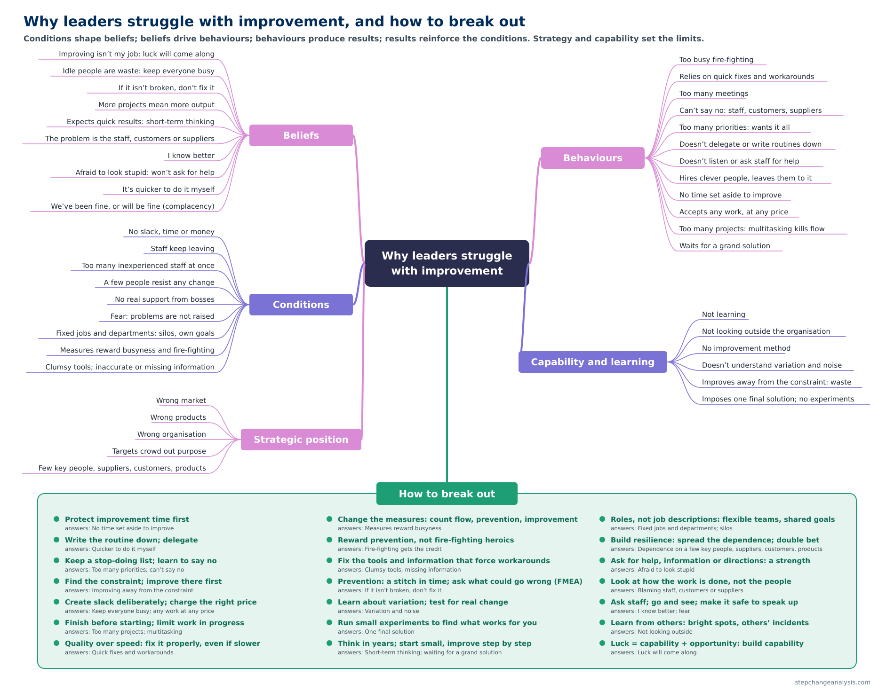

Part of Why organisations fail to improve › Right leadership?
Why leaders struggle with improvement, and how to break out
Most leaders want to improve things, but never find the time. That is rarely a lack of ability: the work itself pulls them into fire-fighting, and keeps them there.
This page shows how that trap works, what keeps leaders in it, and practical ways out, with a printable one-sheet to use with your team.
Short of time? Read the capability trap and where to start: about five minutes. The diagrams are easiest to read on a large screen, or printed: the printable PDF has all three.
The capability trap
![Causal loop diagram of the capability trap. In the central vicious circle, fire-fighting (rework, delays, struggling with deadlines, inaccurate and missing information) creates time pressure and no slack, which reduces time spent improving, which reduces capability, which increases fire-fighting. A further loop shows that fire-fighting leads to quick fixes and workarounds, and the problems come back after a delay, causing more fire-fighting. A second loop shows that fire-fighting makes it quicker to do things yourself, which reduces delegation and written routines, which reduces capability. Variation coming in, problems hidden by fear, a belief that everyone must be kept busy, and a wrong market or products all feed the trap; support from bosses helps time for improvement. A virtuous circle shows that time spent improving produces visible results, which build the belief that improvement pays and, built into the conditions as routines, measures and roles, lock in the gains, leading to more time improving. Green actions break the vicious circle: limit work in progress, choose quality over speed, think prevention, make it safe to speak up, create slack deliberately, protect improvement time, write routines down and delegate, and measure over time.](assets/capability-trap.svg)
The vicious circle (R1). Fire-fighting (rework, delays, deadlines, missing information) leaves no slack, so there is no time to improve, so the problems keep coming back. Nelson Repenning and John Sterman called this the capability trap.
“No one else can do it” (R2). Under pressure it is quicker to do things yourself, so nobody else learns, and the leader is needed even more.
Fixes that fail (R4). A quick fix makes today’s problem go away, but the cause remains, so the problem returns later, often bigger. Peter Senge called this “fixes that fail”. Choose quality over speed.
The virtuous circle (R3). Time spent improving produces results; when results are measured and seen to be real, people make more time for improvement. Lock in the gains by building them into the conditions (written routines, measures and roles), so they last when people move on or pressure returns. Use the slack to give someone the improvement legwork, including using AI to draft procedures and checklists, checked with the people who do the work.
Causal loop diagrams like this one are explained in causal loop diagrams.
What keeps leaders stuck
Behind the trap is a wider loop that keeps things the way they are:
![Why things stay the way they are. Conditions (rules, workflows, measures, rewards and structures) silently shape beliefs (mental models, assumptions and culture) through what is rewarded, punished, measured, and made easy or hard. Beliefs drive behaviours (daily actions, decisions and habits). Behaviours produce results (outcomes and data, which lag). Results reinforce the conditions, as budgets, targets and rules are set from the last results, and seem to prove the beliefs right: a reinforcing loop. Strategy, the boundary and direction, and capability, the ceiling and capacity, set the limits. The trap: when results are poor, stuck leaders take them as proof their beliefs are right. The way out: change your own thinking, then redesign the conditions; new experience changes everyone's beliefs.](assets/why-things-stay.svg)
Conditions silently shape beliefs: what is rewarded, punished, measured, and made easy or hard each day. Beliefs drive behaviours, behaviours produce results, and the results reinforce the conditions. When results are poor, stuck leaders take them as proof their beliefs are right.
How results reinforce the conditions
Results reinforce the conditions through the decisions they prompt:
| When results are poor, leaders often… | …which makes the conditions |
|---|---|
| Cut budgets, freeze hiring, cancel training | Less slack, less capability |
| Add controls: more checks, approvals, reports and meetings | More rules and workload, less time |
| Set tighter targets from last year’s figures | Measures that push for more busyness |
| Find someone to blame, or reorganise | More fear, and memory lost |
| Defer investment in tools and systems | More workarounds and missing information |
Poor results also feed the conditions directly: the backlog, rework and complaints use up the slack before anyone decides anything. Good results reinforce them too, in a different way: “it’s working, leave it alone”. Poor results tighten the conditions and good results freeze them; either way they stay the same, which is why redesigning them has to be a deliberate choice.
Where leaders can act. Mindsets hold the most leverage, as Donella Meadows argued, but nobody can be lectured into a new one. A leader must first change their own thinking enough to redesign the conditions (the rules, workflows and measures); the new day-to-day experience then changes everyone else’s beliefs.
Redesigning the conditions
The condition areas are those of the system conditions in the improvement guide, plus capacity and capability:
| Condition area | What keeps leaders stuck | How to break out |
|---|---|---|
| Measures and rewards | Targets reward busyness and fire-fighting, so slack looks like waste | Change the measures: count flow, prevention and improvement. Reward prevention, not fire-fighting heroics |
| Tools and technology | Clumsy systems; inaccurate or missing information | Fix the tools and information that force workarounds |
| Structure and roles | Fixed jobs and silos; only one person knows how | Roles, not job descriptions: flexible teams with shared goals. Write the routine down and delegate |
| Processes and rules | No written routines; urgent requests jump the queue; quick fixes | Limit work in progress; think prevention, for example with FMEA; choose quality over speed |
| Culture and leadership | Blame, so problems stay hidden; saying yes to everything | Look at how the work is done, not the people; make it safe to speak up; go and see; learn to say no |
| Capacity and capability | No slack, too few staff, gaps in skills, no authority to change things | Protect improvement time; create slack deliberately; build capability; ask for help |
The loop at work: two examples
Two examples from a small specialist software company show the loop running, and how changing the conditions breaks it.
1. Saying yes to every order
| The stuck loop | Breaking out | |
|---|---|---|
| Conditions | Thin margins, developers tied up on custom work, long delivery queues | New rules: no discounts; custom work only when fully costed, specified and charged; referrals come from good delivery, not discounts |
| Beliefs | We must win every order: the market is small, customers are short of money, staff might run out of work, and good relations bring referrals | Customers value us for what we deliver, not for what we give away |
| Behaviours | Accept discounted orders; do custom work for free or at little cost | Quote the standard price; say no, or “yes, at a cost” |
| Results | Business stays slow, which tightens the conditions and seems to prove the belief | Better margins, freed developer time, faster delivery |
2. Projects that stall
| The stuck loop | Breaking out | |
|---|---|---|
| Conditions | Many stalled projects, work in progress climbing, staff multitasking | New rules: limit work in progress; start a project only when the customer is ready, with a ready-made pack for their IT and governance teams; if a project stalls for more than two weeks, pause it and move it to the back of the queue |
| Beliefs | Customers are busy, can’t get help from their IT and governance teams, and aren’t technical, so delays are out of our hands | We can’t control the customer’s IT teams, but we can control what we start and how ready they are when we do |
| Behaviours | Start every project as soon as it’s ordered, keep stalled ones open, and wait | Check readiness before starting, chase early, and move on to a ready project instead of waiting |
| Results | Long projects, slow revenue and frustrated staff, which seem to prove the delays are out of our hands | Fewer projects open at once, faster completion, earlier revenue |
Why good rules still get rejected
New rules change the conditions, but they don’t change the beliefs of the person who has to approve them. To a leader who believes every deal matters, a set of rules looks like a list of ways to lose business. Asking for everything at once usually fails. What works better:
- Run a trial, not a policy. Apply the change to new work for three months, then review.
- Start with one rule, ideally the least threatening. Rules that speed up delivery are easier to accept than rules that mean saying no to customers.
- Use their language. Present it as protecting what they care about, such as customer relationships or faster delivery.
- Let the results persuade. Measure before and during the trial, and make any improvement visible. Seeing results changes beliefs in a way that argument rarely does.
The one-sheet
The beliefs, behaviours, conditions, capability and strategy that keep leaders stuck, with the ways out:

The one-sheet as text
Beliefs
- Improving isn’t my job: luck will come along
- Idle people are waste: keep everyone busy
- If it isn’t broken, don’t fix it
- More projects mean more output
- Expects quick results: short-term thinking
- The problem is the staff, the customers or the suppliers
- I know better
- Afraid to look stupid: won’t ask for help
- It’s quicker to do it myself
- We’ve been fine, or will be fine (complacency)
Behaviours
- Too busy fire-fighting
- Too many meetings
- Can’t say no: staff, customers, suppliers
- Too many priorities: wants it all
- Doesn’t delegate or write routines down
- Doesn’t listen or ask staff for help
- Hires clever people, leaves them to it
- No time set aside to improve
- Accepts any work, at any price
- Too many projects: multitasking kills flow
- Waits for a grand solution
Conditions
- No slack, time or money
- Staff keep leaving
- Too many inexperienced staff at once
- A few people resist any change
- No real support from bosses
- Fear: problems are not raised
- Fixed jobs and departments: silos with their own goals
- Measures that reward busyness and fire-fighting
- Clumsy tools; inaccurate or missing information
Capability and learning
- Not learning
- Not looking outside the organisation
- No improvement method
- Doesn’t understand variation and noise
- Improves away from the constraint: waste
- Imposes one final solution; no experiments
Strategic position
- Wrong market
- Wrong products
- Wrong organisation
- Targets crowd out purpose
- Depends on a few key people, suppliers, customers or products
Where to start
Trying to fix everything at once is itself on the sheet. Start small, in this order:
- Make the time. Protect a small, fixed amount of improvement time, say two hours a week, and treat it like a meeting with your most important customer. Nothing else on the sheet happens without it.
- Choose one problem: the constraint. Ask which recurring problem eats the most time. Improving there frees the most capacity; improving anywhere else is largely waste.
- Run one small experiment, and finish it. Try one change, on a small scale. Measure before and after, over time, so you can see whether it really worked and not just whether last month was good. Finish it before starting the next.
- Show the result, then go again. A visible, proven result is what starts the virtuous circle. The time the first fix saves pays for the second.
Ten things to remember
- The hidden enemy is variation, inside and out.
- An improvement not at the constraint is waste.
- Quick fixes come back to bite you: choose quality over speed.
- Slack is not waste: it is room to improve.
- Finish before you start.
- Prevention is better than cure: a stitch in time saves nine.
- One good month proves nothing: measure over time.
- You can’t lecture people into new beliefs: change what they experience.
- Test, don’t impose: run small experiments.
- Asking for help is a strength, not a weakness.
And one to sum them up: luck = capability + opportunity. Build the capability, and you will be ready when the opportunity comes.
Use it with your team
- As an honest self-check. Tick the beliefs and behaviours that apply to you. Most leaders find three or four that hit home.
- Ask your team to tick it too, anonymously. Where your view and theirs differ is the most useful finding, and asking is itself one of the ways out.
- As a conversation, not a scorecard: which of these hold us back most, and which one shall we tackle first?
- Revisit it every few months. As one struggle eases, the next becomes visible: the constraint has moved, which is a sign of progress.
The ways out and the four questions
This page looks at the leader; Why organisations fail to improve looks at the organisation, through four questions. The ways out fall naturally under those questions, so once you have made time, the guide helps you choose what to work on next.
| Question | Ways out from this page |
|---|---|
| Right leadership? | Protect improvement time; ask for help, information or directions; ask staff, go and see, and make it safe to speak up; learn from others and from the past |
| Right problem? | Look at how the work is done, not the people; find the constraint and improve there first; think prevention, for example with a simple FMEA; limit the variation coming in |
| Right intervention? | Fix it properly: quality over speed; run small experiments; finish before starting; roles, not job descriptions; build resilience; think in years and start small |
| Right measures? | Change the measures; learn about variation; measure over time and test for real change |
Ways out, and where to read more
Each way out on the one-sheet, the struggle it answers, and the page that goes deeper.
Show the ways out and where to read more
| Way out | Answers | Read more |
|---|---|---|
| Protect improvement time first | No time set aside to improve | Focus and prioritisation |
| Write the routine down; delegate | Quicker to do it myself | Leadership that lasts |
| Keep a stop-doing list; learn to say no | Too many priorities; can’t say no | Focus and prioritisation |
| Find the constraint; improve there first | Improving away from the constraint | Finding the real constraint |
| Create slack deliberately, even if it costs more at first; charge the right price | Keep everyone busy; any work at any price | Ashby’s law |
| Finish before starting; limit work in progress | Too many projects; multitasking | Focus and prioritisation |
| Change the measures: count flow, prevention and improvement, not busyness | Measures that reward busyness | Right measures? |
| Reward prevention, not just fire-fighting heroics | Fire-fighting gets the credit | Leadership that lasts |
| Fix the tools and information that force workarounds | Clumsy tools; inaccurate or missing information | System conditions |
| Quality over speed: fix it properly, even if it takes longer | Quick fixes and workarounds | Failure demand |
| Think prevention: a stitch in time saves nine; ask what could go wrong before changing anything, for example with a simple FMEA; limit the variation coming in | If it isn’t broken, don’t fix it | Failure demand |
| Learn about variation; measure over time and test for real change | Variation and noise; can’t see progress | Variation and SPC |
| Run small experiments to find what works for you | Imposing one final solution | The PDSA cycle |
| Think in years; start small, improve step by step | Short-term thinking; waiting for a grand solution | Warnings at the moment of decision |
| Roles, not job descriptions: flexible teams with shared goals | Fixed jobs and departments; silos | Systems thinking |
| Build resilience: spread the dependence; double bet | Dependence on a few key people, suppliers, customers or products | Warnings at the moment of decision |
| Ask for help, information or directions: it is a strength | Afraid to look stupid | Help me lead and sustain improvement |
| Look at the system of work, how the work is done and the processes used, not the people | Blaming staff, customers or suppliers | Deming’s 14 points |
| Ask staff; go and see; make it safe to speak up | I know better; fear | Going to the gemba |
| Learn from others, and from the past: bright spots and dark spots | Not looking outside; not learning | Bright spots |
| Luck = capability + opportunity: build the capability | Luck will come along | Leadership that lasts |
Questions people ask
Why do leaders struggle to find time for improvement?
Because fire-fighting crowds it out. When problems keep recurring, leaders spend their time solving them, so there is no time to fix the causes, so the problems keep recurring. Researchers call this the capability trap. It is a property of the system, not a lack of ability.
What is the capability trap?
A vicious circle: fire-fighting creates time pressure, time pressure squeezes out improvement, less improvement means less capability, and less capability means more fire-fighting. It was described by Nelson Repenning and John Sterman in 2001.
Where should a leader start?
Make a small, fixed amount of time for improvement; choose the one recurring problem that eats the most time; run one small experiment on it, measuring before and after over time; finish it, show the result, then go again.
Read more
Right leadership: refusing to accept “this is the way it is” →
Leadership that lasts: building it in →
High reliability organisations →
Major failures rarely come out of the blue →
Sources: Repenning, N.P. and Sterman, J.D. “Nobody Ever Gets Credit for Fixing Problems that Never Happened”, California Management Review (2001). Goldratt, E.M. The Goal (1984). One-sheet and diagrams: Syd Stewart, StepChangeAnalysis.com.